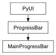

Context manager for main progress bar
If an exception occur after beginProgress() but before endProgress() maya gui becomes unresponsive. Use this class to escape this behavior.
Parameters:
- minValue : int
Minimum or startingvalue of progress indicatior. If the progress value is less than the minValue, the progress value will be set to the minimum. Default value is 0
- maxValue : int
The maximum or endingvalue of the progress indicator. If the progress value is greater than the maxValue, the progress value will be set to the maximum. Default value is 100.
- interuruptable : bool
Set to True if the isCancelled flag should respond to attempts to cancel the operation. Setting this to true will put make the help line display message to the user indicating that they can cancel the operation.
Here’s an example:
with MainProgressBar(0,20,True) as bar:
bar.setStatus('Calculating...')
for i in range(0,20):
bar.setProgress(i)
if bar.getIsCancelled():
break